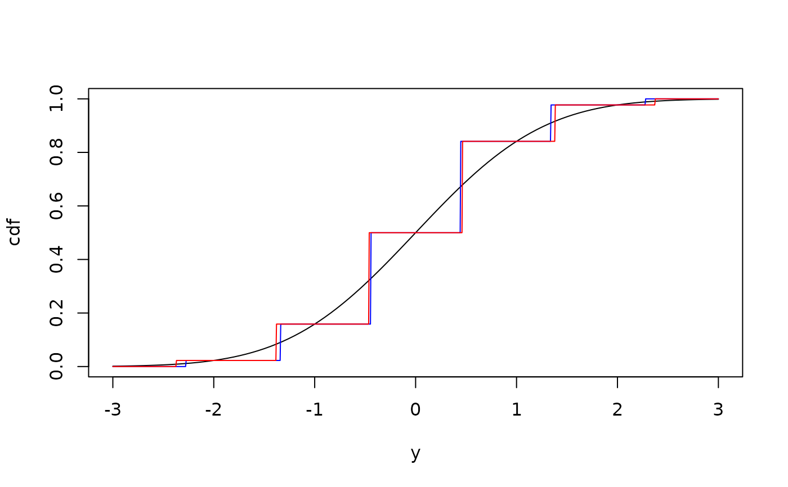

Discretise a Distribution
discretise.RdBins a distribution by specified breakpoints. Left and right endpoints of +/- infinity are implied.
Arguments
- distribution
Distribution to discretise.
- breakpoints
Vector of breakpoints separating each bin.
- midpoints, values
Specify the values associated with each new bin by either specifying a computation of the
midpoint, or as a vector ofvalues(of length one more than that ofbreakpoints) applied to the bins from smallest to largest. If specified,valueswill overridemidpoint.- closed
Should the intervals be closed on the left or on the right? One of
"right"(default) or"left".
Note
NA breakpoints and values (if specified) are silently removed.
Will throw an error if the lengths of values does not end up being
one more than that of breakpoints.
Examples
p1 <- dst_norm(0, 1)
p2 <- discretise(p1, breakpoints = -2:2)
p3 <- discretise(p1, breakpoints = -2:2, midpoints = "mean")
plot(p1, "cdf", from = -3, to = 3)
plot(p2, "cdf", from = -3, to = 3, add = TRUE, col = "blue", n = 1000)
plot(p3, "cdf", from = -3, to = 3, add = TRUE, col = "red", n = 1000)

discretise(dst_exp(0.1), breakpoints = numeric())
#> [1] "degenerate" "finite" "dst"
#>
#> probabilities :
#> # A tibble: 1 × 2
#> location size
#> <dbl> <dbl>
#> 1 6.93 1
dst_norm(0, 1) %>%
slice_left(-2) %>%
slice_right(2) %>%
discretize(-2:2)
#> [1] "finite" "dst"
#>
#> probabilities :
#> # A tibble: 4 × 2
#> location size
#> <dbl> <dbl>
#> 1 -1.34 0.142
#> 2 -0.442 0.358
#> 3 0.442 0.358
#> 4 1.34 0.142